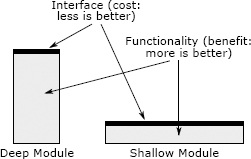

第4章 模块应该有深度
管理软件复杂性最重要的技术之一，是通过系统设计，让开发者在任何时候都只需要面对整体复杂性的一小部分。这种方法称为模块化设计，本章介绍它的基本原则。
4.1 模块化设计
模块化设计把软件系统分解为一组相对独立的模块。模块可以有多种形式，例如类、子系统或服务。理想情况下，每个模块完全独立于其他模块：开发者处理任何模块，都无须了解其他模块。此时，系统的复杂性就等于其中最复杂模块的复杂性。
遗憾的是，这个理想无法实现。模块必须调用彼此的函数或方法来协作，因此必须了解对方的一些信息。模块之间会存在依赖：一个模块改变，其他模块可能需要相应改变。例如，方法的参数会在方法与调用它的代码之间建立依赖。如果所需参数发生变化，所有调用都必须修改，以符合新签名。依赖还有许多其他形式，而且可能相当隐蔽。模块化设计的目标，就是尽量减少模块间的依赖。
为了管理依赖，我们把每个模块看作接口和实现两部分。接口包含在其他模块中工作的开发者使用该模块时必须知道的所有信息。接口通常描述模块做什么，无须交代如何做到；实现则包含兑现接口承诺的代码。开发者处理一个模块时，必须理解该模块的接口与实现，以及它所调用的其他模块的接口；无须理解其他模块的实现。
以实现平衡树的模块为例。它可能有精密的代码，确保树始终保持平衡。但模块使用者看不到这种复杂性，只看到相对简单的接口，用于插入、删除和查找树中的节点。调用插入操作，只需要提供新节点的键和值；遍历树、分裂节点的机制不会出现在接口中。
在本书中，模块指任何具有接口和实现的代码单元。面向对象编程语言中的每个类都是模块。类中的方法，或非面向对象语言中的函数，也可以看作模块：它们各自都有接口和实现，可以应用模块化设计技术。更高层的子系统和服务也是模块，其接口可能呈现为内核调用、HTTP 请求等不同形式。本书关于模块化设计的讨论多以类设计为中心，但这些技术与概念也适用于其他类型的模块。
最好的模块，其接口远比实现简单。这有两个好处。首先，简单接口能尽量减少模块给系统其他部分带来的复杂性。其次，只要修改模块时接口保持不变，其他模块就不会受影响。接口远比实现简单，就意味着模块中有许多方面可以改变，而不影响其他模块。
4.2 接口包含什么？
模块接口包含形式化信息与非形式化信息。形式化部分在代码中明确指定，其中一些正确性可以由编程语言检查。例如，方法的形式化接口就是签名，包括参数名称与类型、返回值类型，以及方法抛出的异常等信息。多数编程语言会检查每次方法调用，确保实参数量与类型符合签名。类的形式化接口包含所有公有方法的签名，以及所有公有变量的名称与类型。
每个接口也包含非形式化要素。它们无法用编程语言能够理解或强制检查的方式指定。这些要素包括高层行为，例如某函数会删除由一个参数指定名称的文件。如果类的使用有限制，例如必须先调用某方法再调用另一个，这些限制也属于类接口。一般来说，只要开发者使用模块必须知道某项信息，它就是模块接口的一部分。接口的非形式化方面只能用注释描述，编程语言无法保证描述完整、准确1。多数接口的非形式化部分，比形式化部分更庞大、更复杂。
接口规定清楚的好处之一，是精确指出开发者使用相应模块需要知道什么。这有助于消除 2.2 节介绍的“未知的未知”。
4.3 抽象
抽象与模块化设计密切相关。抽象是一个实体的简化视图，省略了不重要的细节。它让我们更容易思考和操作复杂事物。
模块化编程中，每个模块通过接口提供一种抽象。接口呈现模块功能的简化视图；从模块抽象的角度看，实现细节不重要，因此被省略。
抽象定义中的“不重要”至关重要。省略的不重要细节越多，抽象越好。但只有不重要的细节才能省略。抽象可能出现两种错误。第一，包含了并不重要的细节，使抽象无谓地复杂，增加使用者的认知负担。第二，省略了确实重要的细节，造成晦涩性：只看抽象的开发者，无法获得正确使用它所需的全部信息。省略重要细节的是虚假抽象：外表简单，实际并不简单。设计抽象要弄清哪些信息重要，并寻找能尽量减少这些重要信息数量的设计。
以文件系统为例。它提供的抽象省略了许多细节，例如如何选择存储设备上的块来保存某个文件的数据。只要系统性能足够，这些细节对用户并不重要。但某些实现细节对用户很重要。多数文件系统在主存中缓存数据，为提高性能，可能推迟将新数据写入存储设备。数据库等应用需要确切知道数据何时写入存储，才能确保系统崩溃后数据仍被保留。因此，将数据刷新到外部存储的规则，必须在文件系统接口中可见。
我们依靠抽象管理复杂性，这既发生在编程中，也遍及日常生活。微波炉内部有复杂的电子电路，把交流电转换成微波辐射，并将辐射分布在炉腔中。好在用户看到的抽象简单得多：几个按钮控制微波的时间与强度。汽车也提供简单的抽象，让我们无须理解电动机、电池电源管理、防抱死制动、巡航控制等机制，就能驾驶。
4.4 深模块
最好的模块提供强大功能，同时拥有简单接口。我用“深”形容这类模块。要直观理解深度，可以像图 4.1 那样，用矩形表示每个模块。矩形面积与模块实现的功能成正比，顶边代表接口，顶边长度表示接口复杂性。最好的模块很深：简单接口后面隐藏着大量功能。深模块是好的抽象，因为用户只看得到其内部复杂性的一小部分。

图 4.1：深模块与浅模块。最好的模块是深模块，能通过简单接口访问大量功能。浅模块接口相对复杂，功能却不多，隐藏的复杂性也很少。图中 Interface 表示接口，是成本，越少越好；Functionality 表示功能，是收益，越多越好；Deep Module、Shallow Module 分别表示深模块和浅模块。
模块深度是一种衡量成本与收益的方式。模块提供的收益是功能，以系统复杂性衡量的成本是接口。接口代表模块施加给系统其他部分的复杂性：接口越小、越简单，引入的复杂性越少。最好的模块收益最多、成本最少。接口有用，但接口更多、更大，未必更好！
Unix 及 Linux 等后继操作系统提供的文件 I/O 机制，是深接口的出色例子。基本 I/O 系统调用只有五个，签名都很简单：
int open(const char* path, int flags, mode_t permissions);
ssize_t read(int fd, void* buffer, size_t count);
ssize_t write(int fd, const void* buffer, size_t count);
off_t lseek(int fd, off_t offset, int referencePosition);
int close(int fd);
open 接受 /a/b/c 这样的层级文件名，返回一个整数文件描述符，用它引用打开的文件。其他参数提供选项，例如以读方式还是写方式打开，文件不存在时是否创建，以及新建文件的访问权限。read 和 write 在应用内存中的缓冲区与文件之间传输信息；close 结束对文件的访问。多数文件按顺序访问，因此这是默认行为；需要随机访问时，可调用 lseek 改变当前访问位置。
现代 Unix I/O 接口的实现需要数十万行代码，处理诸多复杂问题，例如：
- 如何在磁盘上表示文件，以便高效访问？
- 如何存储目录，如何处理层级路径名以找到它指向的文件？
- 如何执行权限检查，防止一个用户修改或删除另一个用户的文件？
- 如何实现文件访问？例如，怎样在中断处理程序与后台代码之间分配功能，两者如何安全通信？
- 并发访问多个文件时，采用什么调度策略？
- 如何在内存中缓存最近访问的文件数据，以减少磁盘访问？
- 如何把磁盘、闪存驱动器等不同外部存储设备纳入同一个文件系统？
Unix 文件系统实现负责处理所有这些问题及更多问题，调用系统调用的程序员看不到它们。多年来，Unix I/O 接口的实现发生了巨大变化，但五个基本内核调用始终没有改变。
另一个深模块的例子，是 Go 或 Java 等语言中的垃圾回收器。这个模块完全没有接口，在后台悄然回收不再使用的内存。加入垃圾回收实际上会缩小系统整体接口，因为释放对象的接口被消除了。垃圾回收器实现很复杂，但使用语言的程序员看不到这种复杂性。
Unix I/O、垃圾回收器这样的深模块，既容易使用，又隐藏了大量实现复杂性，因此提供了强大的抽象。
4.5 浅模块
浅模块的接口相对于它提供的功能而言较为复杂。例如，实现链表的类就是浅模块。操作链表用不了多少代码，插入或删除元素只需几行，链表抽象隐藏不了多少细节。链表接口的复杂程度几乎与实现一样。浅类有时难以避免，但对管理复杂性帮助不大。
下面是一个极端的浅方法例子，取自软件设计课的一个项目：
private void addNullValueForAttribute(String attribute) {
data.put(attribute, null);
}
从管理复杂性的角度看，这个方法让情况变糟。它的全部功能都能通过接口看见，没有提供抽象。例如，调用者很可能需要知道，属性会存进 data 变量。理解接口并不比理解完整实现更容易。如果把文档写完整，文档会比方法代码还长。调用它所需的按键次数，甚至多于直接操作 data 变量。这个方法增加了复杂性，让开发者多学一个新接口，却没有提供相应收益。
危险信号：浅模块
浅模块的接口相对于所提供的功能而言较复杂。它对抗复杂性的帮助很小，因为无需了解内部工作方式所带来的收益，被学习和使用接口的成本抵消。小模块往往较浅。
4.6 类膨胀症
遗憾的是，如今深类的价值尚未得到广泛认识。编程中的常见观念强调类要小，却忽视深度。学生常被教导，类设计最重要的事是把大类拆成小类。对方法也经常有类似建议：“超过 N 行的方法，都应该拆分成多个方法。”N 甚至可能只有 10。这会产生大量浅类、浅方法，增加系统整体复杂性。
“类应该小”的做法走到极端，就形成我称为“类膨胀症”的现象。它源于“类很好，类越多就越好”的错误观念。这类系统鼓励开发者尽量减少每个新类的功能：需要更多功能，就增加更多类。类膨胀症可能让每个类单独看都简单，却增加了整个系统的复杂性。小类贡献的功能不多，因此需要很多类，每个又各有接口。这些接口累积起来，在系统层面造成巨大复杂性。每个类所需的样板代码，也会让编程风格变得冗长。
4.7 示例：Java 与 Unix I/O
Java 类库是如今最显眼的类膨胀症实例之一。Java 语言本身并不要求大量小类，但这种文化似乎已经在 Java 社区扎根。例如，要打开文件并读取序列化对象，必须创建三个不同的对象：
FileInputStream fileStream =
new FileInputStream(fileName);
BufferedInputStream bufferedStream =
new BufferedInputStream(fileStream);
ObjectInputStream objectStream =
new ObjectInputStream(bufferedStream);
FileInputStream 对象只提供最基本的 I/O，既没有缓冲，也不能读写序列化对象。BufferedInputStream 为 FileInputStream 增加缓冲，ObjectInputStream 增加读写序列化对象的能力。上述代码中的前两个对象 fileStream 和 bufferedStream，在文件打开后就不再使用；后续操作全部通过 objectStream 进行。
必须单独创建 BufferedInputStream 对象，显式要求缓冲，这一点格外烦琐，也容易出错；忘记创建，就没有缓冲，I/O 会很慢。Java 开发者也许会说，并非人人都想用缓冲，因此不该把它内置到基本机制里；把缓冲独立出来，让人自行选择是否使用更好。提供选择有好处，但接口应当让常见情况尽可能简单，参见原书第 6 页的公式。几乎所有文件 I/O 使用者都需要缓冲，因此应默认提供。少数不适合缓冲的情况，可以提供关闭机制。这个机制应在接口中清楚地独立出来，例如给 FileInputStream 提供另一种构造函数，或提供禁用、替换缓冲机制的方法，让多数开发者甚至无须知道它的存在。
Unix 系统调用的设计者则让常见情况很简单。例如，他们认识到顺序 I/O 最常见，就将其设为默认行为。利用 lseek 做随机访问依然相对容易，但只做顺序访问的开发者无须了解它。如果接口功能很多，但多数开发者只需知道其中几个，那么接口的实际复杂性，就只是那些常用功能的复杂性。
4.8 小结
把模块接口与实现分开，就能向系统其他部分隐藏实现的复杂性。模块用户只需理解接口提供的抽象。设计类和其他模块时，最重要的是让它们具有深度：常见用法拥有简单接口，同时提供充足功能。这样才能隐藏尽可能多的复杂性。
-
有些语言，主要来自研究领域，允许使用规约语言形式化地描述方法或函数的整体行为，并自动检查规约是否与实现相符。一个值得思考的问题是，这类形式化规约能否替代接口的非形式化部分。我目前认为，对开发者而言，用英语描述的接口，可能比形式化规约语言更直观、更容易理解。 ↩